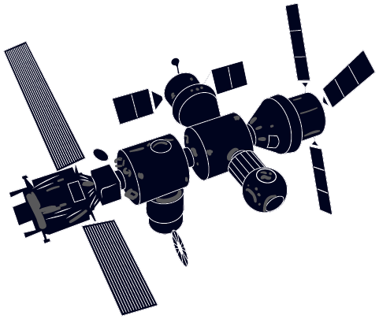
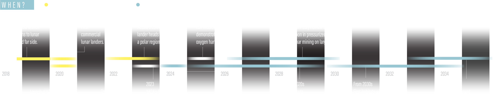
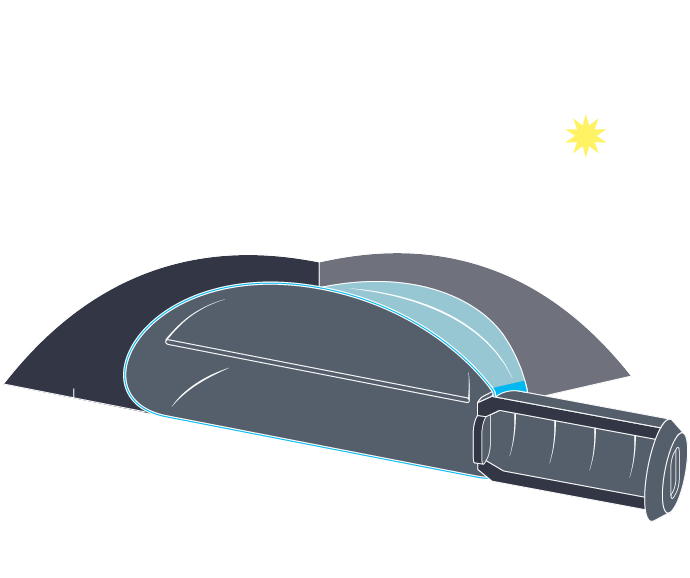
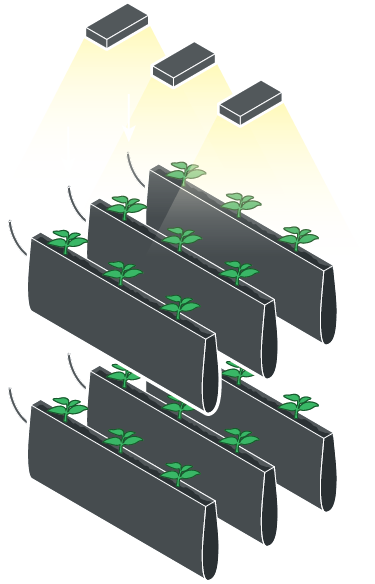

How to Build
a Moon Base
Introduction
Next year, astronaut Matthias Maurer expects to walk on the surface of the Moon — but without the hassles of a rocket flight, zero-gravity nausea and a risky landing. Instead he’ll stroll close to home in a leafy meadow near Cologne, Germany, which is set to host the largest Moon mock-up ever made. On a pit of artificial lunar dust covering more than 1,000 square metres, Maurer and other scientists will be attached to crane-and-pulley systems that allow them to leap as if experiencing the Moon’s weaker gravity, and work under adjustable lamps that simulate lighting at different lunar sites. Sometimes, they will retreat to lunar-style living quarters: an airlock-connected module the size of a shipping container.
It’s an exciting playground for testing lunar technology, says Maurer, who is a project manager for the multimillion-euro facility. Called LUNA, the mock-up is taking shape outside the European Astronaut Centre in Cologne, with funding from the European Space Agency (ESA) and the German Aerospace Center (DLR). But at 48 years old, Maurer doesn’t know whether he will ever put his skills to use on the genuine article. “Hopefully I will make it before retirement. Technically, I believe it’s feasible that I will still walk on the Moon,” he says.
Maurer’s optimism isn’t entirely outlandish. He was only two the last time someone visited the Moon for real: US astronaut Eugene Cernan, in the last mission of NASA’s Apollo programme. No space agencies have yet committed money to send people back. But, partly as a result of changing political priorities, momentum for human return to the Moon is growing. Rather than rerun the Apollo missions, space agencies are slowly warming to the idea of establishing a sustainable settlement.
Researchers relish the idea of a base for conducting experiments on the Moon and as a way to trial technologies for heading to Mars. Private firms, however, are increasingly tempted by the possibility of mining oxygen and hydrogen — which power rockets — from lunar ice. If that does pan out, then the Moon could become a refuelling station, radically reducing the expense of space travel.
“Water is the oil of space, and there’s mounting evidence that it’s there in economically viable deposits,” says George Sowers, an aeronautical scientist at the Colorado School of Mines in Golden and previously chief scientist at United Launch Alliance, a firm in Centennial, Colorado, that provides launch services for the US government.
When Will This Happen?
Space agencies are generally reluctant to predict a timeline for a crewed Moon base — in part, because the goal lies well outside their budget horizons, but also because it requires businesses to provide much of the money for the various stages involved. But ESA’s director-general, Jan Wörner, has for years talked about multiple countries and companies collaborating in a semi-permanent settlement, which he calls a ‘Moon village’. China’s National Space Administration has also been quoted in state media saying that a Moon base is its goal, although it has not announced when that might happen.
"Space activities should be for the benefit of all countries and humankind"
Lunar exploration prospects gained a boost last December, when a US presidential directive told NASA to switch its sights from exploring asteroids to returning humans to the Moon. NASA has since asked companies to develop lander technology and has outlined plans to request billions of dollars over the next five years for new programmes to support lunar exploration, leading to eventual human return. “It’s a fairly radical change of direction,” says Sowers. And this October, European engineering firm Airbus launched a contest called the Moon Race, with supporters that include ESA and the US spaceflight firm Blue Origin, which promises to fund companies to develop key technologies for the sustainable development of the Moon.
In the next few years, the only missions to touch down on the Moon will be robotic: China and India will launch probes in the next three months, and Russia has one scheduled within the next five years. But NASA, ESA and the space agencies of Russia, Japan and Canada all support the idea of building a space station in orbit around the Moon by the mid-2020s. (In his 2019 budget request, US President Trump proposed that NASA spend US$2.7 billion on the project over the next 5 years.) That orbiter could provide a base from which to make short, multi-week crewed trips to the Moon’s surface in a pressurized rover — which Maurer calls the “camper-van solution”. Finally, a settlement could follow. “I think that 20 years is a realistic time frame for a lunar surface infrastructure of some sort, either inhabited by or tended by humans,” says James Carpenter, strategy officer for human and robotic exploration at ESA in Noordwijk, the Netherlands.
Researchers have long explored ways to harvest lunar resources, but more in hope than expectation. Now, they are ramping up lunar settlement technology with genuine anticipation that their work might be put into action. While Maurer and others at ESA’s LUNA centre practise living on and mining the Moon, others are working on how to grow food and build radiation-proof shelters.
At a July meeting at ESA’s European Space Research and Technology Centre in Noordwijk to prepare for future human Moon missions, more than 250 specialists from academia, mining, metallurgy, construction and architecture pitched their ideas. “If you ran the same workshop five years ago, it may have only been a handful of people,” says Aidan Cowley, science adviser at the European Astronaut Centre. “The appetite has really increased.” Although a Moon base might still never happen, Earth-bound preparation for lunar living is well under way.
Water Mining
Lunar settlers’ first challenge will be harvesting water. The Apollo missions, which collected samples from the Moon’s equator, suggested that the satellite is dry and barren. So the discovery a decade ago that the Moon’s poles harbour patches of water ice “was a game changer”, says Robert Mueller, a senior technologist at the NASA Kennedy Space Center in Cape Canaveral, Florida, who develops lunar-mining technologies.
For now, researchers don’t exactly know where the ice is, how thick it is or whether it is mixed with soil or packed in sheets. India’s Chandrayaan-2 rover, scheduled to launch next year, and Russia’s LUNA 27 lander, planned for 2022, will target these questions. Russia’s lander will have a 2-metre-long drill designed by ESA, and a laboratory to study the origin and abundance of lunar water. NASA also wants to hunt for that water, and has commissioned a suite of companies to develop lunar landers that would carry prospecting instruments, beginning as early as next year. A four-crew human base would need a negligible amount of this water — perhaps dozens of tonnes per year, says Sowers — and there’s plenty of it. “Estimates based on current data suggest there may be 10 billion tonnes per pole,” he says.
"“Water is the oil of space”, Lunar settlers’ first challenge will be harvesting water"
The vast majority of the ice would be mined for fuel. Sowers calculates that mining firms could turn a profit by extracting around 1,000 tonnes of water a year and electrolysing it into its constituent oxygen and hydrogen parts for propellant. The Moon’s low gravity means that it would be much cheaper to stock up for long-distance space travel from there than it is from Earth. As an example, a lunar return mission that refuelled at the Moon would cost just one-fiftieth of the price of one that brings all its fuel with it from Earth.
In August, scientists using data from India’s Chandrayaan-1 orbiter found that the Moon’s ice lies on its surface — but in permanently shaded craters as frigid as −249 °C, the naturally coldest spots known in the Solar System. Excavation machines would need heat and power to release the water and turn it into propellant. Because plutonium-based batteries, which rely on the heat generated by the natural decay of radioisotopes, are too expensive for most private firms, lunar prospectors will probably have to harness energy from the Sun.
They will take inspiration from southern Norway, where giant mirrors set high on a mountain overlooking the town of Rjukan have since 2013 beamed sunlight onto a patch of the town’s central square that would otherwise be grey and chilly all winter. Prospectors would hope to do something similar on the Moon, says Sowers. Light from high peaks could be directly channelled into the craters, he says, where it would heat the ice and turn it into vapour. From there, condensed water would be shuttled to a processing plant and split by solar electricity into hydrogen and oxygen. These gases could then be stored and either used as propellant or channelled through fuel cells to supply energy.
Alternatively, rovers could scoop up ice-filled soil and warm it in ovens to release water. The ovens could be powered wirelessly, by training high-power lasers onto photovoltaic cells on the rover. The LUNA facility could test how this would work in real life, with added challenges such as Moon dust in the atmosphere that scatters the laser beams, says ESA’s Leopold Summerer. LUNA scientists will also clamber into life-like Moon craters to see how easy it is to navigate these deep, dark slopes, Maurer says.
Living off the soil
If ice isn’t accessible, there is an alternative source of water on the Moon: its soil, also known as regolith. Regolith contains silica and metallic oxides that make it — on average — 43% oxygen by mass, and it is found everywhere on the Moon. Oxygen grabbed from soil could power scientifically or economically interesting outposts far from the poles, and produce useful by-products such as rare metals.

Regolith doesn’t give up its riches easily. Releasing oxygen from its chemical bonds is more energy-intensive than heating ice. In theory, a reactor could use giant mirrors to channel sunlight onto a furnace little bigger than an envelope, heating Moon dirt to more than 900 °C until it glows. At that temperature, hydrogen or carbon, brought initially from Earth, can strip oxygen from its minerals and bind the element together with hydrogen to make water. A field test in Hawaii in 2010 on simulated lunar regolith demonstrated that the process was feasible — although working in low gravity and a vacuum is untested. “Essentially it’s a proven technology and would be ready to go within a few years,” says Mueller.
Researchers hope to improve the process further to cut down on what needs to be brought from Earth. At the Polytechnic of Milan in Italy, a group led by aerospace engineer Michèle Lavagna is developing a prototype that works at lower temperatures and recycles all the inputs — in this case, methane and hydrogen — so that soil is the only consumable. Currently, one device might take decades to generate enough water to power a single Apollo-style lander back into orbit. But Lavagna says that on the Moon, multiple reactors could work in parallel. With around €600,000 (US$692,000) of ESA funding, her team is now working on a demonstrator plant that would be small enough to fly on a mission.
"Solar concentrators - mirrors and lenses - could generate high temperatures that release oxygen from metal oxides."
And the metallurgy firm Metalysis, in Rotherham, UK, is trying to pull oxygen from solid metal ores by passing electricity through a bath of molten salts, rather than relying on a chemical reaction. The technique, which the firm pioneered to create high-quality metal alloys for aerospace industries, could also produce high-purity metal for machinery on the Moon.
Finding Shelter
If it turns out that water can’t be harvested for profit, an outpost based around scientific experiments will still develop, argues Maurer. “Without a commercial perspective, it simply will take much longer to materialize,” he says. “We might end up in a situation similar to research in Antarctica — driven mainly by pure scientific interest.”
Researchers are excited about the experiments that a return to the Moon could yield, says Robin Canup, a planetary scientist at the Southwest Research Institute in Boulder, Colorado. Sampling the Moon’s ancient craters could reveal how the Moon–Earth system formed, when the early Solar System was in a state of flux and asteroids pummelled the satellite. Researchers would also like to study the Moon’s water cycle and its seismology — and to install a radio-telescope shielded from Earth interference, which could study radiation from the early Universe.
"Astronauts would need shelter from cosmic rays and meteorites."
Unlike in Antarctica, however, lunar residents need to be sheltered from the charged particles of radiation and tiny meteorites that rain down from space — because the Moon has next to no protective atmosphere or magnetic field. The first flat-pack shelters are likely to be brought from Earth, but would need to be covered with metres of sand or regolith, Maurer says.
One solution is natural: to exploit cliffs, canyons, caves and lava tubes — tunnels caused by ancient volcanic activity — to protect living quarters. Last year, scientists reanalysing radar data from the Japanese space agency’s SELENE orbiter and density measurements from NASA’s GRAIL mission found a candidate tunnel that apparently runs for kilometres, beneath the Marius Hills on the Moon’s near side. On Earth, researchers have already practised commanding rovers to drive in lava tubes in Lanzarote, in Spain’s Canary Islands, to prepare for future lunar exploration.
A few hundred metres from LUNA, in a DLR laboratory in Cologne, Matthias Sperl is testing another idea — growing artificial stone from regolith. In Sperl’s lab, a beam of intense light, concentrated on a coin-sized patch, fuses together fizzing sheets of powder at a searing 1,100 °C. Over time, these layers add up to create dark grey, grainy bricks, as in a 3D printing process. On the Moon, sunlight could be concentrated to do the same thing, says Sperl, whose project is part of RegoLight, a €1-million collaboration between the DLR, Belgian aerospace company SAS and architecture and engineering firms. The sheets do not bond together perfectly, but the bricks are already around one-fifth as strong as concrete and comparable to plaster, says Sperl.
Architecture firms Bollinger Grohmann Schneider and Liquifer Systems Group, both in Vienna, showed in April that by interlocking the bricks into arches and domes, they could create robust structures. Sperl says these are solid enough to survive Moon quakes and bear the weight of more gravel piled on for protection. Currently, the process takes around 5 hours to make a single brick — but channelling more sunlight could speed it up, he says. Scientists elsewhere are exploring making shelters by searing regolith together in microwave ovens, or binding it together with materials brought from Earth, such as polymers.
Kale Diet
Plant scientists have also spent a good deal of time thinking about the final ingredient needed in a self-supporting Moon base: food. As part of a closed ecosystem, plants would recycle organic waste and turn carbon dioxide into oxygen to breathe. In May, Chinese state media reported that volunteers finished a record 370-day stay inside such an ecosystem, a simulated base known as Lunar Palace 1, in which they grew crops and raised mealworms for protein.
"Kale is a winner. It’s a powerhouse that hits everything."
Astronauts on the International Space Station (ISS) already eat space-grown lettuce and other leafy greens. A NASA programme run from the Kennedy Space Center, known as Veggie, has helped to select crops that grow well in confined spaces and are packed with the nutrients that degrade most in storage — vitamins C1, K and potassium. Kale is a winner. “It’s a powerhouse that hits everything,” says Veggie project manager Trent Smith.
On the Moon, astronauts would grow plants in water under white and red LEDs which they can tweak to alter the mineral and vitamin composition of the plant. Next year, ISS tests will examine how the composition of tomatoes changes depending on the light. More studies will be needed to establish how best to grow crops in regolith’s mixture of metals. “We’d like to know what it takes to build living soils out of what is essentially space dust,” says Smith. If plants can grow in regolith, adds Veggie researcher Matthew Romeyn, “suddenly that means bringing small fruit trees, not just leafy greens.”
“If humans can only stay for short periods of time because of hazards, and if they can‘t grow food locally, the programme will implode,” Mueller says. Another barrier might be a legal one: the 1967 Outer Space Treaty, which all major space-faring nations have signed, states that no country can “appropriate” any part of a celestial body. Most nations today accept that this does not rule out mining in space, says Dimitra Stefoudi, an expert in space law at the University of Leiden in the Netherlands. Since 2015, two countries, the United States and Luxembourg, have enacted national laws allowing space mining, to promote nascent companies. (Russia and Belgium are among countries which argue that mining needs a new international framework.) But the 1967 treaty also says that space activities should be for the benefit of all countries and humankind, so firms will still need to find ways to share know-how and the eventual gains of harvesting resources on the Moon, Stefoudi says.
Conclusion and Extra Information
Ultimately, says Mueller, setting up camp on the Moon is likely to be a desire checked not by technology, but by political will and economics. “If we can solve both of those, I absolutely believe that permanent inhabitation of the Moon will happen.”
Learn more about this article and future projects at these sites:
European Space Agency LUNA Project German Aerospace Center United Launch Alliance Blue Origin Polytechnic of Milan